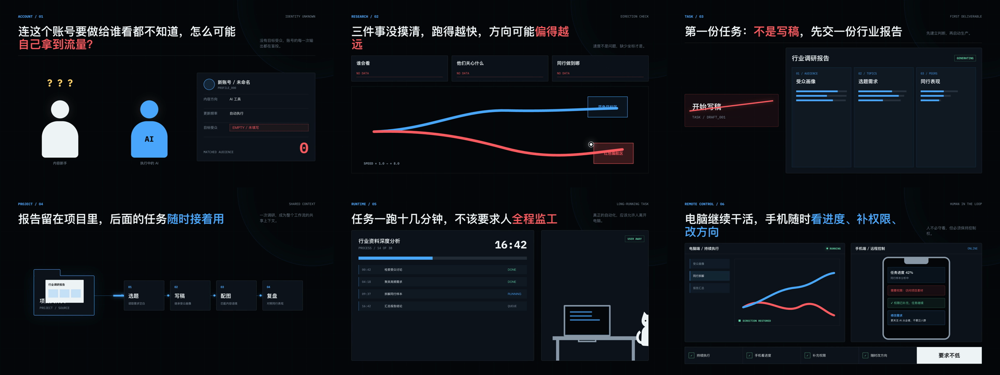

2026.06 - 至今
西安纬度网络科技有限公司
AI 类目编导
搭建 AI 科普、工具实操、AIGC 创作三条内容赛道，负责栏目、脚本、分镜与排期；同时承接两款 Godot 游戏全流程策划。

Operator Profile / CHY
网络与新媒体背景让我重视用户、内容和传播；产品与游戏实践让我把这些判断继续写成规则、数据、界面和可运行结果。
Profile
我关注的不是“把功能写全”，而是用户为什么需要它、系统之间如何互相驱动，以及研发如何验证。作品覆盖 Godot 2D/3D、Unity 叙事项目、React 游戏原型和 AI 产品。
在内容、运营与产品岗位中的训练，让我能够同时考虑体验目标、传播场景、协作成本和数据反馈。
2026.06 - 至今
AI 类目编导
搭建 AI 科普、工具实操、AIGC 创作三条内容赛道，负责栏目、脚本、分镜与排期；同时承接两款 Godot 游戏全流程策划。
2026.02 - 06
电商产品经理实习生
负责海外电商产品信息、竞品调研与差异化方案，参与促销流程、交互和奖励规则设计，并依据转化与客单价复盘。
2023.06 - 09
产品运营实习生
完成 4 款平板竞品分析，建立 80+ 条知识库并转化为 12 篇内容；用户自助查询率提升 40%，售前咨询量降低 20%。
2022.09 - 2026.07
网络与新媒体本科 · 影视编导方向
主修视听语言与影视编导，获陕西省大学生广播电视公益广告创意剧本奖，大学英语四级。
Working Method
四步方法不是固定瀑布流程，而是用来保证每次迭代都有清楚输入、判断和验收。
明确目标用户、核心乐趣、设备约束、体验时长和暂缓项，先守住 MVP。
拆解状态、输入输出和依赖，建立成长基线、资源关系与难度曲线。
输出 PRD/GDD、流程、容错、配表和资源规范，让协作方可以直接执行。
进入引擎或原型验证完整链路，识别工程风险并按 P0/P1/P2 给出验收线。